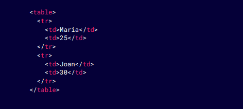
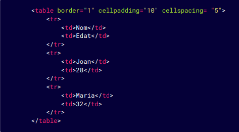

En HTML, las tablas sirven para organizar información en filas y celdas. Para crearlas, usamos etiquetas que indican dónde empieza la tabla, cómo se forman sus filas y dónde va cada dato.
Etiquetas para crear tablas:

Atributos de la tabla:
